RnD Tea Time
Team Ocean - Hamburg
New approach for
third party integrations
Agenda
- Introduction to the approach
- Why this approach?
- Evaluation
What is the approach?
Old approach
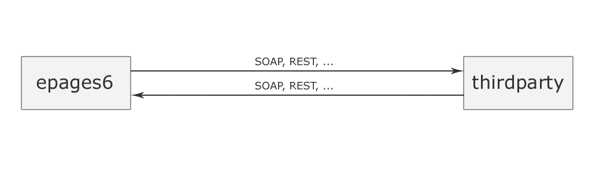New approach
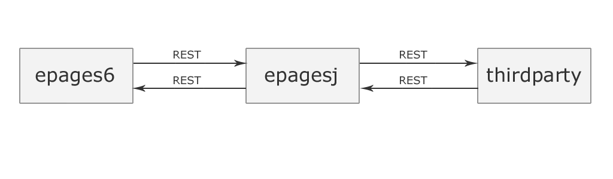Reasons?
Why we choose this approach?
Find similarities between payments
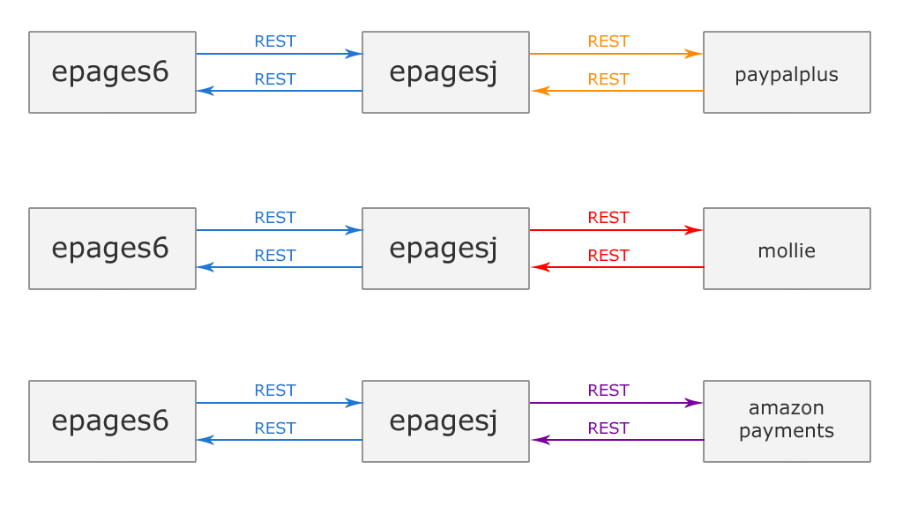To create a unified communication interface
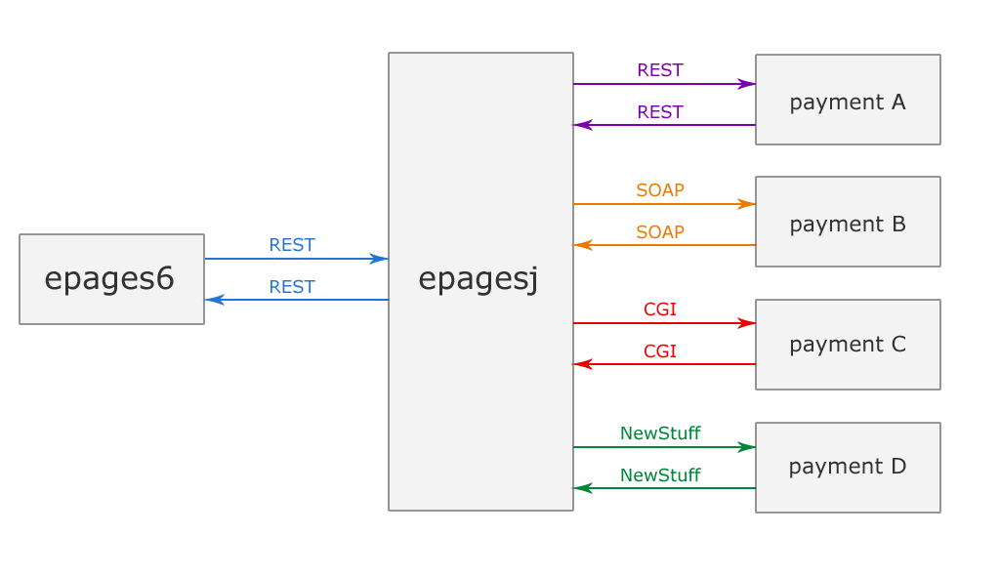Use new technologies
| 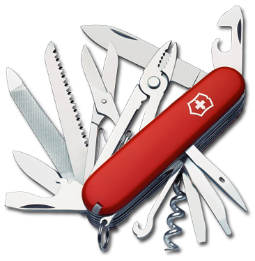 | |
| Perl | Java |
Use Software Development Kits (SDKs)
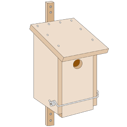| without SDK | with SDK |
Why not everything in java?
Because it's not possible at the moment.
Evaluation
How did it work out?
Advantages

Saving time in development
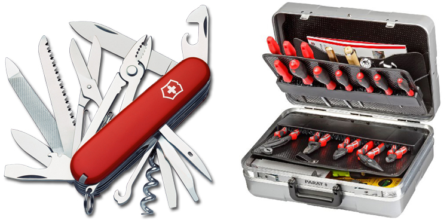instead of
Produce code that might
be reused in the future
Disadvantages
Adding another dependency
Adding another dependency
could cause this

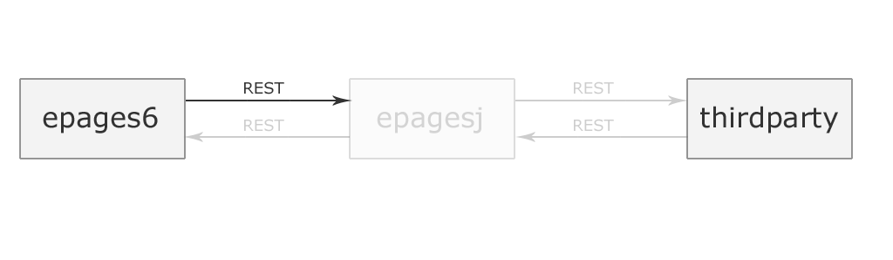
Adding another dependency
also means..
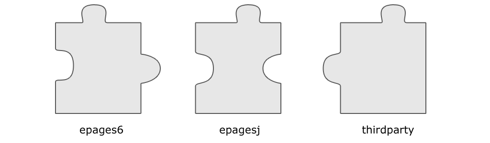Adding another dependency
if we change something in epages6..
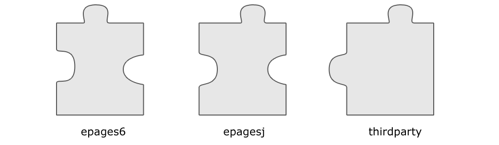Adding another dependency
we have to adjust epagesj as well
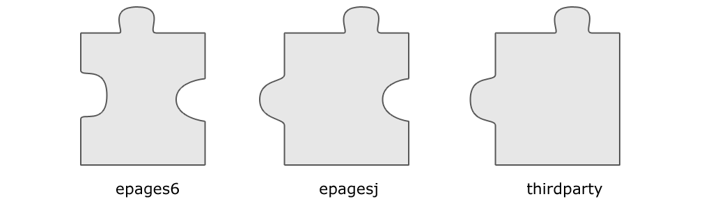Architecture and maintainance
becomes more complex

Runs slower
since there is an extra layer
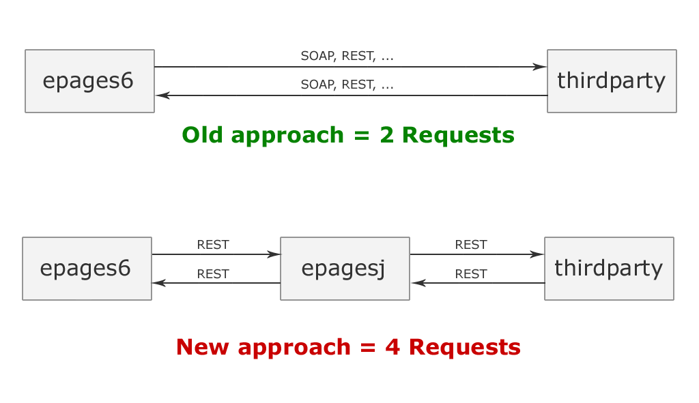
Our Conclusion
- We gained experience with new technologies
(+)
- We used the paypal-SDK
(+)
- We noticed design problems in our code, because the extra layer made us realize them
(+)
- We used an unified way to do calls from epages6
(+)
- We had to deal with an additional layer
(-)